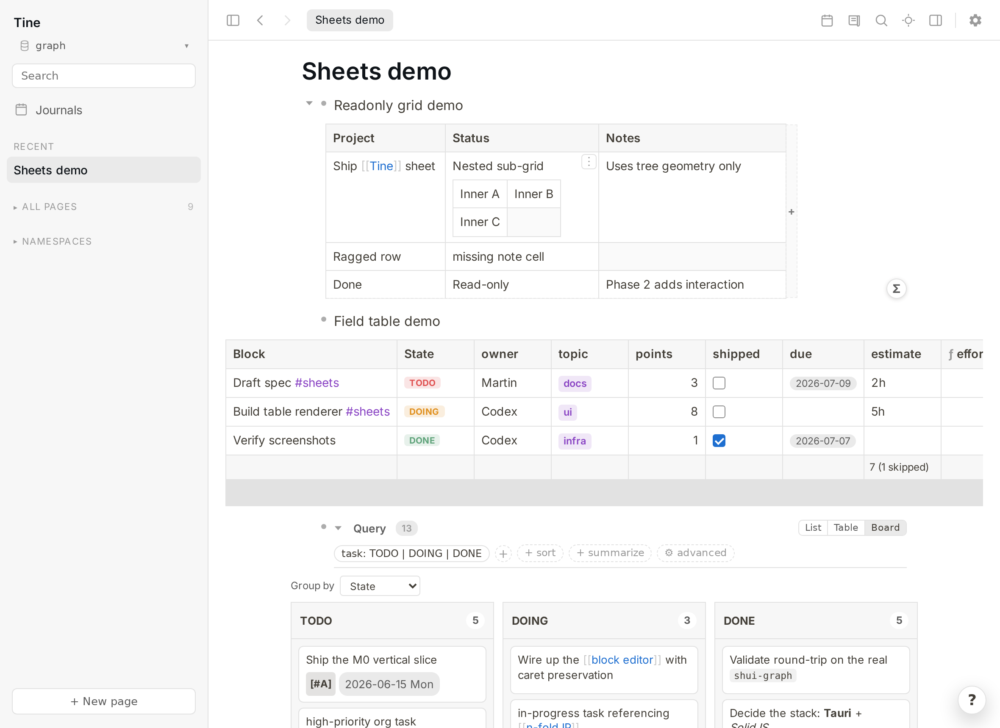
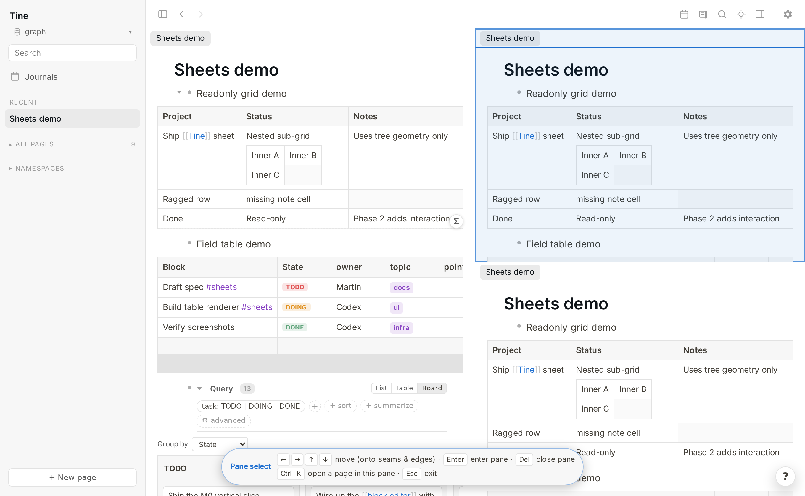

⚡
Native speed
A pure-Rust core and fine-grained SolidJS reactivity in a tiny Tauri/WebKit runtime — no Electron, no virtual-DOM churn. Typing stays in the frontend; whole-graph reads hit an in-memory index. It stays quick on large graphs.
Local-first · open source · works on your Logseq graph
Tine is a fast, local, Logseq-compatible outliner. It reads and writes the same Markdown files Logseq does — so you can switch between the two whenever you like, with no import, no export, and no lock-in.
Free & open source (AGPL-3.0). Linux is the primary, best-tested platform today; macOS & Windows builds are newer. Not yet 1.0.

A native Android app that opens and edits your real Logseq graph on your phone — the same Markdown files, over your own sync, right alongside the Logseq mobile app.

Early and experimental. For now it's a sideloaded APK from GitHub (arm64 phones) — your phone will warn that it's from outside the Play Store, which is expected for a self-signed app. Play Store & F-Droid are planned.
We're long-time Logseq users and we have a lot of respect for what that project pioneered. Tine isn't a fork and it isn't a clone trying to pull you away. It's an independent reimplementation that deliberately targets Logseq's on-disk format, so your notes stay exactly where they are — plain Markdown files you fully own.
journals/, pages/, assets/ and
logseq/config.edn you already use.
And it keeps the good Logseq features you already rely on — live /calc
blocks, callouts, queries, PDF annotation, namespaces, page
properties, org-mode and more — reading and writing them in the very same format. Browse the
Logseq docs for what's possible, try it in Tine, and if
something you use doesn't work yet,
open an issue — we may well just
add it.

/calc blocks — a Logseq feature, preserved
These started as "I wish Logseq did this." They're the reasons Tine exists beyond raw speed — and you get them without giving up a single feature of your file format.
A pure-Rust core and fine-grained SolidJS reactivity in a tiny Tauri/WebKit runtime — no Electron, no virtual-DOM churn. Typing stays in the frontend; whole-graph reads hit an in-memory index. It stays quick on large graphs.
Turn any bullet and its children into a spreadsheet-style grid, a typed
field table, or a Kanban board — with formula columns,
filters, aggregates, group-by, and CSV/TSV import. It's all still plain Logseq Markdown;
the views are harmless tine.* properties Logseq quietly ignores.
Split the window into panes, each with its own tabs and history. Ctrl+click opens a link beside what you're reading, drag a tab to another pane, and TreeSheets-style keyboard navigation splits at a seam by typing. The layout survives a restart.
Middle-click any bullet, page, or search hit to open it in a background tab. Pin, drag-reorder, Mod+W to close, and use the overview when titles no longer fit. Pins survive a restart.
Open every Ctrl+K result in a persistent tab, refine it with friendly filters or the visual query builder, and view the same matches as search, list, table, or board. Name it only when it deserves to become a real query page.
Hide the chrome and fade everything but the block you're working on, with layered Esc. A calmer way to write a long note.
Bind a desktop hotkey and a small always-on-top box pops from any app — with the full editor — and files a bullet to today's journal. Even when Tine isn't focused.
Roll unfinished tasks into today (last 7 / 30 / 365 days or a custom window), optionally keeping their ancestor context.
Conflict detection instead of silent overwrites, launch snapshots with one-click restore, delete-to-trash, and transactional renames. Built to live safely on a graph you also edit from your phone.




Tine ships a polished dark theme and switches with your OS, or you can toggle it yourself. Your custom Logseq CSS and themes apply just the same.

Where we think a default can be improved, we change it — but we never take the choice away. Anything Tine does differently from Logseq is clearly badged Differs from Logseq in Settings, with a one-click ↩ Match Logseq button. Your muscle memory is safe.
collapsed:: on copy so a paste into a text editor is clean. (Toggle off to match Logseq.)config.edn :shortcuts.config.edn and adjustable in-app.
Tine is a faster outliner, not a wholesale replacement for Logseq. A few things are deliberately out of scope. For those, just keep using Logseq on the same graph — running both is the whole idea.
The spatial canvas isn't part of Tine.
No SRS review. Your #card blocks are preserved in the files, just not drilled.
No @logseq/libs plugin runtime. Custom CSS and themes do work.
Bring your own — Syncthing, Dropbox, git. Tine just reads and writes the files.
There's a native Android app, but no iOS build yet. On iPhone, use the Logseq mobile app — or fastlog — on the same synced graph.
On the radar, not yet shipped: a graph view, configurable typographic auto-replace, and broader coverage of advanced (Datalog) queries.
Tine is vibe-coded — built by Claude Code, with help from Codex, under human direction and review. We're not hiding that, and we're not making a thing of it either; it's simply how Tine is made.
AI-built software makes some people wary — fair enough. So Tine is made to be checked, not taken on faith:
Point it at a copy of your graph and judge it by how it behaves.
And here's the other side of that: AI writes the code — the human writes the reflections. For each release I post a short note in my own words about what changed and why, along with the conversations it started — Claude summarizes them faithfully and generously, fully linked, skeptics included. Read “The Human's Blog” →
Tine is free, open source, and built in the cracks of a busy life. If it's made your notes a little faster or your day a little smoother, and you'd like to say thanks with a coffee — that genuinely makes me happy, and I'm grateful. Anything donated goes first toward Tine's running costs — the domain, and things like app-store registration fees down the line.
One honest thing, so there are no crossed wires: donating won't move Tine up my list, and it won't buy a feature. I work on Tine when I can and on what I find worth doing — a tip changes none of that. Think of it as a thank-you for what already exists, not a down payment on what's next. No expectations, no obligations, either way. 🌱
Questions, ideas, screenshots, bug reports — come say hello on the subreddit. It's the best place to follow what's shipping and shape what's next.
Because Tine works on standard Logseq files, the safest way to try it is to point it at a copy of your graph and see how it feels. Nothing to import, nothing to migrate.